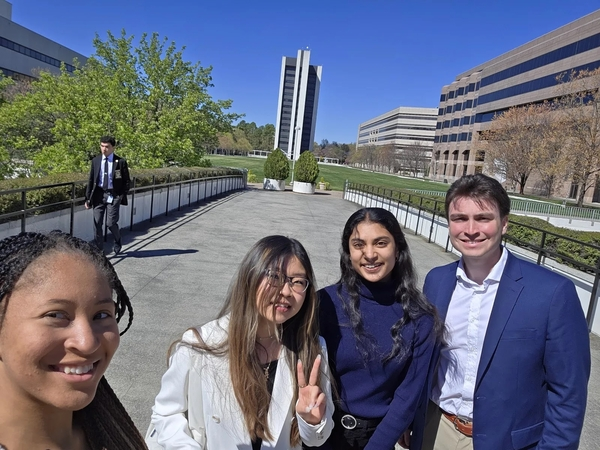

Events Section
Our team in this campaign is dedicated to challenging fast fashion practices and advocating for sustainable alternatives. Our mission is to empower individuals and communities to demand transparency, accountability, and eco-friendly solutions from the fashion industry.
We aim to inspire change in how clothing is produced and consumed—fighting for environmental justice and workers' rights. In partnership with NCPIRG, we amplify student voices and pressure major brands like H&M to reduce waste and adopt sustainable practices.
Our Origins
The campaign grew out of a desire to hold fast fashion brands accountable. It all started with student-driven petitions and legislative outreach. Our team began by organizing local petitions, educating students, and lobbying for the Environmental Accountability Act—a proposed bill to mandate sustainable reporting in the apparel industry.
